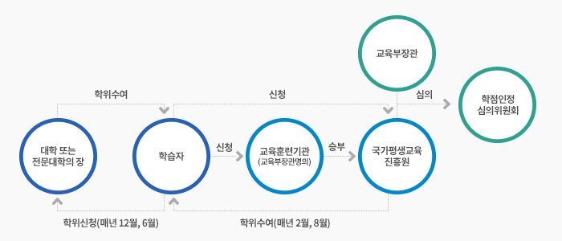

학위수여안내
학위신청이란?
학점은행제를 통해 학위를 수여받는 방법에는 학위수여권자(누가 학위를 수여하는가)에 따라 크게 두가지로 나뉘어 집니다.
하나는 교육과학기술부장관이 수여하는 학위수여방식이고, 다른 하나는 대학의 장 등에 의한 학위수여 방식입니다.
어느 방식으로 학위를 수여받게 되느냐에 따라 필요한 학점과 절차가 다르므로 아래의 내용을 자세히 읽어주시기 바랍니다.
학위신청
학위신청은 학위요건을 충족하여 교육과학기술부장관이 수여하는 학위를 취득하고자 하는 신청을 말합니다.
이는 대학(교)에서의 졸업신청과 유사합니다. 따라서 학위를 수여받고자 하신다면 정해진 기간에 반드시 학위신청을 하셔야 하며, 학점을 모두 취득하여 인정 받으신 분이라고 하더라도 해당간에 학위신청을 하지 않는다면 학위를 취득하실 수 없습니다.
대상자
학위신청기간안에 신청한 학점을 포함하여 학위취득요건을 충족한 자
신청기간
1. 전기 학위수여(2월 학위수여예정자) : 12월 15일부터 익년 1월 15일까지
2. 후기 학위수여(8월 학위수여예정자) : 6월 15일부터 7월 15일까지
신청방법
홈페이지를 통해 아래의 순서로 신청(우편, 팩스신청 불가)
1. 학점은행제 홈페이지 접속
2. [학위신청] 배너 클릭: 개인학점인정 신청시스템으로 이동
3. 개인학점인정 신청시스템 로그인 및 [학위신청]메뉴 선택
4. 휴대폰 번호 입력(확인)
5. 학위 및 전공명 확인 후 교육과학기술부장관 학위 신청 버튼 클릭
6. 학위신청 안내 문구 및 주의사항 확인 후 신청
7. 공인인증서 확인
8. 학위신청 완료(문자통보)
9. 학위신청서 출력하여 보관
10. 홈페이지-마이페이지에서 학위신청 결과 확인(확인가능 일자는 홈페이지 공지)
※ 최종적인 학점인정신청처리가 완료 되지 않은 상태에도 학위 신청 가능함.
※ 대학의장에 의한 학위취득예정자는 해당 대학에 학위신청 해야 함.
- 주의사항
학습자등록은 최소 학위신청마감일 75일(한 분기) 이전에 신청하여야 함
(근거: 학점인정 등에 관한 운영규정 제18조6항).
주의사항
학습자등록은 최소 학위신청마감일 75일 (1분기) 이전에 신청하여야 함
학위수여 절차

학위신청 시 주의사항
전문학사 학위취득 예정자의 경우 ,추후 학점은행제 학사학위로 연계하려는 계획이 있는 경우, 전문학사학위를 취득한 학점 중에서 최대 80학점까지만 학사학위 과정의 학점으로 인정받을 수 있습니다.
따라서 전문학사학위를 취득하려는 시점에서 학점이 80학점 이상 초과되는 경우, 초과학점은 학사과정에서 불인정 되므로 이 부분을 유념하여 [전문학사 학위신청]여부를 판단하시기 바랍니다.
(전문학사 과정에서 인정받지 않은 미신청 학점도 학사과정 연계시 인정되지 않음. 단, 자격증 및 독학사 시험합격으로 취득한 학점은 전문학사 과정에서 인정받지 않았다면, 학사과정에서 인정 가능함).
학위수여 근거
법 제9조 제1항 및 영 제15조, 제16조 제1항 .
학위수여 요건
아래의 1~5의 모든 요건이 충족되어야 합니다.
어느 하나라도 부족하다면 학위수여를 받을 수 없음을 유의하셔야 합니다.
| 구분 | 학사학위 | 전문학사학위 | ||
|---|---|---|---|---|
| 2년제 | 3년제 | |||
| 1 | 총 학점 | 140학점 이상 | 80학점 이상 | 120학점 이상 |
| 2 | 전공 | 60학점 이상 | 45학점 이상 | 54학점 이상 |
| 3 | 교양 | 30학점 이상 | 15학점 이상 | 21학점 이상 |
| 4 | 이수학점 중 평가인정학습과목 또는 시간제등록을 통해 이수한 학점이 반드시 18학점 이상 포함되어야 함. | |||
| 5 | 전공필수는 희망하는 전공에 따라 학점수 또는 과목수로 충족하여야 함. | |||
주의사항
1) 전공필수요건은 무엇인가?
전공필수학점은 그 전공을 희망하는 자가 반드시 그에 해당학점을 취득하거나 정해진 과목을 이수하여 요건을 충족해야 하는 학점을 말합니다. 아래의 예를 자세히 읽어 주시길 바랍니다.
예) 학사과정 전자계산학에서의 전공필수요건을 충족하는 방법
① 과목을 모두 이수하는 방법
국가평생교육진흥원 홈페이지 [표준교육과정]에는 전공별로 세부교육과정표가 나와 있습니다.
예를 들어 국가평생교육진흥원 홈페이지 [표준교육과정]→[학사]→[전자계산학]을 차례로 클릭하시면 볼 수 있는 세부교육과정표에서 전공필수로 구분되어 있는 과목을 모두 이수하시면 됩니다.
이때, 해당과목 학점이 반드시 3학점일 필요는 없으며, 이수과목이 2학점씩이지만 전공필수에 속한 모든 과목을 이수하셨다면 전필학점이 부족한 것은 문제되지 않습니다.
단, 학위수여 전공요건에 따른 나머지 전공학점은 전공선택에서 충족해야 합니다.
② 해당학점을 인정받는 방법
기준학점으로 정해진 학점이상을 전필로 인정받을 경우 요건이 충족됩니다.
학사과정 [컴퓨터공학]전공을 예로 들면, 기준학점이 3학점씩 7과목이므로 21학점 이상을 전공필수학점으로 인정받을 경우과목을 모두 이수하시지 않아도 전공필수요건이 충족됩니다.
만약 컴퓨터공학 전공에 연계되는 자격인 정보처리산업기사를 취득하여 16학점을 전공필수로 인정받았다면, 앞으로 5학점 이상을 전공필수로 더 취득하시면 전필요건이 충족됩니다.
2) 전공과 교양을 제외한 부분은 일반선택 학점으로 이수해야 하는가?
일반선택은 전공 및 교양에 해당하지 않는 다른 전공의 학점을 말합니다. 예를 들어 국어국문학 전공자인 A가 교양과 관련없는 전기공학 전공과목인 B라는 과목을 이수한 경우 B과목은 일반선택 학점으로 인정되는 것입니다. 학사 과정에서 전공과 교양의 최소요건학점(학사의 경우 60+30=90)을 제외한 50학점(140-90)은 학습자께서 학습구분(전공, 교양, 일반선택)에 관계없이 원하시는 대로 학습구분을 선택하여 이수하실 수 있는 것으로 반드시 다른 전공의 전공과목을 이수하여 일반선택 학점을 이수하실 필요는 없습니다.
예) 전문학사 희망자인 A가 전공필수를 포함한 전공 50학점, 교양 30학점을 인정받은 상태( 평가인정 학습과목 및 시간제등록 18학점요건 포함)이다. 일반선택학점이 없어 학위를 수여받을 수 없는가?
→ 그렇지 않습니다. 전공필수를 포함한 전공 45학점과 교양 15학점이상을 제외한 20학점 이상은 원하는대로 이수하실 수 있는 학점이므로, A는 전문학사 학위취득이 가능합니다(즉, 일반선택을 반드시 일정 학점이상 포함되어야 하는 것은 아님).
타전공 학위수여요건
대학의 복수전공제도와 유사하게 이전에 이미 학위수여 받은 학습자가 학점은행제를 통해 다른 전공의 학위를 수여받고자 하실 때 이용하는 방법입니다.
(※ 타전공 학위수여요건 개정: 학점인정 등에 관한 법률 시행령 제16조제1항제2호)
| 학사학위 | 전문학사 학위(2년제) | 전문학사 학위(3년제) | 공통요건 |
|---|---|---|---|
| 전공 48학점 이상 | 전공 36학점 이상 | 전공 42학점 이상 | 1. 학점은행제 평가인정 학습과목 또는 시간제등록을 통한 학점이 반드시 전공 18학점이상 포함되어야 합니다. 2. 전공필수는 희망하시는 전공에 맞게 학점 또는 과목을 모두 이수 하셔야 합니다. (위 학위요건 중 주의사항 1)을 참고하세요. |
주의사항
1. 타전공 학위수여방식은 이미 학위취득을 하신 분에게만 해당됩니다.
2. 평가인정학습과목, 시간제등록, 학점인정대상학교, 독학학위제, 자격증, 중요무형문화재 등을 통해 취득할 수 있습니다. 자격증은 최대 1개까지만 인정됩니다.
3. 학위취득 이후에 취득한 학점만 인정됩니다. 단, 자격증과 중요무형문화재는 취득기간에 관계없이 인정가능 합니다.
4. 대학의 장등에 의한 학위수여가 가능하나, 해당 대학으로 세부적인 학위요건을 확인해야 합니다.
5. 학력인정 각종학교 졸업자도 타전공 학위취득이 가능합니다.
2009년 9월 1일 이전에 타전공 과정으로 학습자등록 및 학점인정(1학점 이상)이 되어 있는 학습자는 시행령 개정 전 기준인 전공 35학점 이상 이수시 학위수여 가능합니다 (단, 2011년 8월 31일까지 학위취득을 완료해야 함). 이와 관련한 사항은 [홈페이지→공지사항→684번, 709번]에 자세히 안내되어 있습니다.
학위수여 근거
법 제9조 제1항 및 영 제15조, 제16조 대학의장 등에 의한 학위수여 제2항 .
학위수여 요건
아래의 1~6의 모든 요건이 충족되어야 합니다.
어느 하나라도 부족하다면 학위수여를 받을 수 없음을 유의하셔야 합니다.
| 구분 | 학사학위 | 전문학사학위 | ||
|---|---|---|---|---|
| 2년제 | 3년제 | |||
| 1 | 총 학점 | 140학점 이상 | 80학점 이상 | 120학점 이상 |
| 2 | 전공 | 60학점 이상 | 45학점 이상 | 54학점 이상 |
| 3 | 교양 | 30학점 이상 | 15학점 이상 | 21학점 이상 |
| 4 | 이수학점 중 평가인정학습과목 또는 시간제등록을 통해 이수한 학점이 반드시 18학점 이상 포함되어야 함. | |||
| 5 | 해당대학의 학점 | 84학점 이상 | 48학점 이상 | 65학점 이상 |
| 5 | 해당 대학의 학칙으로 정한 세부 요건에 충족하여야 함. (※ 학위수여를 희망하는 대학에 직접 확인해야 함) | |||
학위수여 절차
1. 해당대학에서의 희망하시는 전공의 학위수여가 가능한지, 학칙이 정해놓은 요건이 어떠한지 확인하여, 해당대학의 학점 등 학점을 이수합니다.
2. 국가평생교육진흥원에 학습자 등록 및 학점인정신청을 통해 이수한 학점을 인정받습니다.
3. 학위에 필요한 모든 학점을 인정받게 되면, 대학이 정해놓은 기간에 학위신청서와 학점인정증명서(또는 성적증명서)를 해당대학교에 제출합니다.
4. 대학교는 학위수여 여부를 결정하여, 해당대학의 학위수여예정일 21일 이전에 국가평생교육진흥원에 학위수여예정자명단을 통보합니다.
5. 국가평생교육진흥원은 학위수여요건의 충족여부 등을 확인하여 학점인정심의위원회의 심의를 거친 후 해당대학교에 결과를 알립니다.
6. 대학교는 학위를 학습자에게 수여하고 그 결과를 국가평생교육진흥원에 보고합니다.
* 대학의장등에 의한 학위수여방식에 대한 보다 자세한 내용은 국가평생교육진흥원 홈페이지 내 [자료실]→[학습자 관련자료]→214번.[대학의 장 등에 의한 학위수여업무지침]의 내용을 참조하시길 바랍니다.
주의사항
1) 모든 대학교에서 위의 방법을 통한 학위수여가 가능한가?
그렇지 않습니다. 해당대학교의 학칙에 대학의 장에 의한 학위수여방식이 반영되어 있어야 합니다.
학칙에 해당내용이 없다면 그 대학교에서는 위와 같은 방식을 통한 학위수여는 불가능합니다.
따라서 대학의 장에 의한 학위수여를 희망하신다면 먼저 해당대학교 담당자에게 가능여부, 가능하다면 학칙에 정해진 요건 등을 자세히 안내받으셔야 합니다.
2) 대학(교)의 모든 전공에서 대학장에 의한 학위수여가 가능한가?
대학등의 학칙에서 정하는 학위종류 및 전공은 학점은행제 [표준교육과정]을 기준으로 하되, 그 학위종류나 전공이 표준교육과정상의 그것과 유사할 경우 학칙이 정하는 바에 따르도록 되어 있습니다.
단, 그 학위종류나 전공이 해당 대학 등의 정규과정에 개설되어 있지 않은 경우와 의학계열, 사범계열 등은 제외되며, 유사성판단은 국가평생교육진흥원의 조사와 확인을 거쳐 학점인정심의위원회의 심의를 통해 결정되도록 되어 있습니다.
또한 대학 등의 정규 과정에 개설되어 있지 않은 학위종류 및 전공에 대해서는 대학의장 등에 의한 학위수여가 불가능합니다.
예) A는 OO대학교에서 해당대학의 기계전공 전문학사학위를 수여받고자 한다. 가능한가?
→ 대학 등의 정규과정에 개설되어 있지 않은 학위종류 및 전공에 대해서는 대학의 장 등에 의한 학위수여를 받을 수 없으므로 4년제 대학교에서 학사학위가 아닌 전문학사 학위를 수여받을 수는 없습니다.